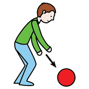
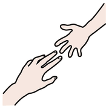
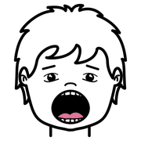

Secondo incontro, modulo 6
La logica del PECS
Che cos'è il Picture Exchange Communication System, come è organizzato e che cosa può fare la scuola quando è già in corso.
Lo scambio
 dare
dare pittogrammi
pittogrammi
prendereIl PECS (Bondy e Frost, Delaware, 1985) insegna la comunicazione funzionale attraverso lo scambio fisico di un simbolo: il bambino porge la carta all'adulto, non si limita a indicarla. Così è lui a iniziare la comunicazione.
dalla richiesta
al commento
Le sei fasi
uno duetre
duetre frase
frase
duetrefrase- Lo scambioDare il simbolo per ottenere ciò che si desidera.
- La persistenzaAndare a cercare l'adulto e il simbolo, anche lontano.
- La sceltaDistinguere tra più simboli.
- La frase«Voglio» più il simbolo.
- Rispondere«Che cosa vuoi?»
- Commentare«Vedo», «sento», «ho»: commenti spontanei.
A scuola dell'infanzia e nei primi anni della primaria contano soprattutto le prime tre. Questa è una panoramica, non una formazione clinica.
continuità,
non
sostituzione
Che cosa fa la scuola
 scuola
scuola famiglia
famiglia
lavorare insieme- OsservaAnche un tentativo di scambio imperfetto è comunicazione.
- RinforzaValorizza l'iniziativa del bambino, senza pretendere la parola.
- Resta coerenteSegue quanto stabilito con lo specialista.
Non dovete diventare terapisti PECS: dovete saperlo riconoscere e sostenere quando è già in corso.
Fonti e cautele
 attenzionelibro
attenzionelibro
logopedistaBondy A., Frost L. (1994), The Picture Exchange Communication System, Focus on Autistic Behavior, 9(3), 1-19.
- Il PECS richiede valutazione e programmazione da parte di una figura clinica formata.
- Se una famiglia chiede di introdurlo da sola, si rimanda sempre allo specialista.
- La coerenza tra scuola e terapia conta spesso più del singolo intervento.